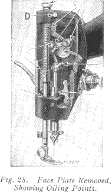
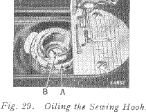
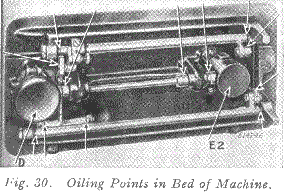
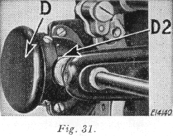
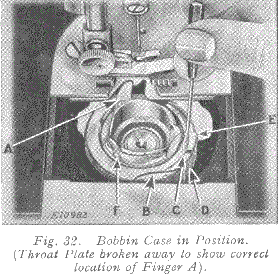

TO OIL MACHINE AND STAND
The Arm Spool Pin C is screwed for insertion in the left plugged hole and it is also provided with a screw driver slot. If the machine is used continuously, it should be oiled daily. If moderately used, an occasional oiling is sufficient.
Apply one drop of oil to each of the places indicated in Figs 27, 28, 29, 30 and 31 and carefully clean the machine to insure smooth and satisfactory performance. Oil holes are provided in the machine for bearings which cannot be directly reached.
Remove face plate A, Fig 27, by taking out screw B and slipping plate over screw D, Fig 28. After oiling replace face plate. Draw to the left the slide in the bed of the machine, as shown in Fig 27, while the thread take-up lever (5, Fig 10) is at its highest position, and, after removing the lint and dust which may have accumulated, apply one drop of oil to the sewing hook race in the bobbin case, as indicated by arrow "A" in Fig 29, and a few drops to the oil hole "B" in Fig 29. Then close the slide.
To oil the parts underneath the bed of the machine, turn the machine back on its hinges and apply oil to the oil holes and bearings indicated in Fig 30. The gears concealed by the gear cover (E2, Fig 30) are oiled through the oil hole (E, Fig 27). The gears concealed by gear cover (D, Fig 30) are oiled through the space just above the cover, as indicated by arrow (D2, Fig 31).
After oiling at D2, rotate the hand wheel toward you to distribute the oil on these gears. To oil the stand, apply a drop of oil to the centres upon which the treadle works, and to the lower end of the pitman rod. Run the machine rapidly for a few minutes so that the oil may reach the bearings.
Neglect to oil the machine will shorten its life and cause you trouble and annoyance. Always use SINGER oil. Inferior oil cogs the bearings, prevents efficient working, and causes rapid wear of the mechanism.
TO CLEAN STITCH FORMING MECHANISM
After considerable use, the stitch forming mechanism may become clogged with lint and this may interfere with the perfect operation of the machine. Occasionally remove the bobbin case according to the following instructions, and remove any lint, etc., which has accumulated.

TO REMOVE BOBBIN CASE (See Fig 32)
The bobbin case may be easily removed without taking off the throat plate, although for the purpose of illustration the throat plate and feed dog are shown broken away.
Remove bobbin from the bobbin case. Turn hand wheel over toward you until the end of hook ring E is toward the front of the machine, as shown. Insert the blade of the small screwdriver into slot C between the ring and the edge of spring, as shown.
With a downward pressure, give the screwdriver one half turn to the right so that it will drop into the slot and unlock the spring.
With the right hand hold the hand wheel to prevent its turning and , with the left, place the screwdriver against the edge of the slot in the ring and push it around in the direction opposite to the hook rotation until the circular cut-out B is opposite the spring D. The ring and bobbin case may then be lifted out.
TO REPLACE BOBBIN CASE (See Fig 32)
When replacing the parts, first place the bobbin case into position with the finger A in the opening in the plate under the feed dog, as shown. Turn the bobbin case back and forth slightly to make sure that it is properly seated, then place the hook ring E in position with the cut-out B opposite the spring D. Press the ring into place and turn it in the direction of hook rotation until the spring locks it in position. Then replace the bobbin.